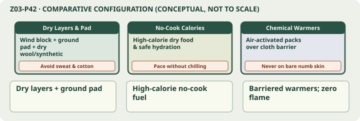

Z03-P42 · Fire and ignition · New manuscript
Use insulated layers, warm dry food and chemical handwarmers without fire
Maintain core body heat and extremity function reliably when campfires are banned, impossible or unsafe.
When it applies · Cold travel, burn bans, wet forests, high-wind exposure and indoor power outages without safe vented heat.
Equipment · Dry wool/synthetic layers, insulated sleeping system, ground pad, high-calorie no-cook food and optional sealed air-activated handwarmers.

Actions
- Reduce heat loss first by getting out of wind, insulating underneath from cold ground and changing into dry wool or synthetic layers with a hat and mittens.[C08, E05, E10]
- Support internal metabolic heat with easy-to-eat high-calorie foods and safe hydration while pacing light gentle movement without working up a chill-inducing sweat.[E10, E05, W09, ED]
- If using commercial air-activated chemical warmers, follow package directions and keep a cloth layer between warmers and bare or numb skin to prevent contact burns.[E05, T04, ED]
Failure recognition · Trying desperately to build an illegal or wet wood fire for two hours instead of eating calories, putting on dry spare insulation and climbing onto a foam pad.[C08, E05, E10]
Verify · Confirm wind block, dry underbody pad, dry head/hand/core layers and no-cook calories are active without needing combustion.[C08, E05, ED]
Stop or change course · If shivering worsens into fumbling, slurred speech, confusion or severe drowsiness, treat as medical hypothermia and call 911 immediately.[E06, T03, T02]
Evidence and editorial notes
- C08 · NWS · What To Do If You're Caught in a Winter Storm (current web edition)
- Section: Outside > If there is no shelter nearby · Conditions: Stranded outdoors during a winter storm
Support: Seek shelter and block wind and wet exposure. Reduce heat loss from contact with snow or ground.
Limitations: Does not guarantee overnight survival without adequate insulation or rescue. · Conflicting evidence: None; reinforces no-fire exposure control priority.
Editorial note: Anchors no-fire fallback when ignition fails or is banned. · Specialist reviewer: Cold-weather shelter specialist
Primary source · checked 2026-11-24 - E05 · NWS · What To Do If You're Caught in a Winter Storm (current web edition)
- Section: Outside and find shelter · Conditions: Cold, wet or windy winter conditions
Support: Block wind, stay dry and keep off cold ground. Keep exposure reduction separate from making a fire.
Limitations: Improvised windbreaks do not provide rated thermal protection or snow-load capacity. · Conflicting evidence: None; aligns with CDC-H.
Editorial note: Separates wind, ground, and moisture heat-loss pathways. · Specialist reviewer: Cold-weather shelter specialist
Primary source · checked 2026-11-24 - E06 · CDC · Preventing Hypothermia (current web edition)
- Section: Recognizing and treating hypothermia · Conditions: Cold wet exposure; signs such as confusion, slurred speech, fumbling or drowsiness
Support: Suspected hypothermia warrants prompt help and protection from further cooling. It can occur above freezing if wet or chilled.
Limitations: Early mild shivering can mask rapidly worsening judgment impairment. · Conflicting evidence: None; aligns with ARC and WMS guidance.
Editorial note: Anchors exposure-to-medical escalation thresholds. · Specialist reviewer: Wilderness medicine
Primary source · checked 2026-11-24 - E10 · NWS · What To Do If You're Caught in a Winter Storm (current web edition)
- Section: Outside > Protect yourself from frostbite and hypothermia · Conditions: Outdoor winter storm
Support: Keep clothing dry and avoid overexertion. Wetness accelerates cooling.
Limitations: Cotton retains moisture and accelerates conductive and evaporative heat loss. · Conflicting evidence: None; reinforces moisture-management layering.
Editorial note: Links sweat management to overnight insulation integrity. · Specialist reviewer: Cold-weather shelter and wilderness medicine
Primary source · checked 2026-11-24 - T02 · American Red Cross · First Aid Steps (current web edition)
- Section: First Aid Steps > Call 9-1-1 · Conditions: Lay emergency response to unresponsiveness, abnormal breathing or severe bleeding
Support: Activate EMS and get needed equipment. Follow dispatcher directions and act within training.
Limitations: Remote locations may delay EMS arrival, requiring sustained stabilization after activation. · Conflicting evidence: None; aligns with NPS-E.
Editorial note: Mandates early emergency activation and dispatcher adherence. · Specialist reviewer: EMS and wilderness medicine
Primary source · checked 2026-11-24 - T03 · CDC · Preventing Hypothermia (current web edition)
- Section: Warning signs; What to do · Conditions: Cold exposure and suspected hypothermia
Support: Confusion, slurred speech and drowsiness are warning signs. Obtain medical attention and protect from further cold.
Limitations: Shivering may stop as hypothermia worsens; absence of shivering is not reassurance. · Conflicting evidence: None; aligns with WMS cold guidelines.
Editorial note: Core neurological red-flag trigger for stopping activity and calling rescue. · Specialist reviewer: Wilderness medicine
Primary source · checked 2026-11-24 - T04 · Wilderness Medical Society · Frostbite clinical practice guideline 2024 update (2024)
- Section: Field treatment scenarios and Table 1 · Conditions: Suspected frostbite outside immediate medical care
Support: Avoid refreezing. Whether to actively thaw depends on ability to keep tissue thawed and evacuate. Detailed treatment requires clinical review.
Limitations: Field assessment cannot reliably determine final tissue depth. · Conflicting evidence: Supersedes outdated rubbing or snow-pack thawing myths.
Editorial note: Retained for cross-zone cold-injury stop boundaries. · Specialist reviewer: Wilderness medicine
Primary source · checked 2026-11-24 - W09 · CDC · Water Treatment Options When Hiking, Camping, or Traveling (current web edition)
- Section: Overview and water treatment methods · Conditions: Hiking or camping where no safe source is confirmed
Support: Even clear water can contain germs. Assess the supply and carry safe water or an appropriate treatment method.
Limitations: Visual clarity never detects microbes or dissolved chemical contaminants. · Conflicting evidence: None across CDC/NPS/EPA sources.
Editorial note: Reinforces clarity-is-not-potability invariant across all Z04 cards. · Specialist reviewer: Drinking-water safety and public health
Primary source · checked 2026-11-24
Source lineage · NWS winter weather, NPS Ten Essentials and CDC hypothermia; new manuscript · Classification · New manuscript.